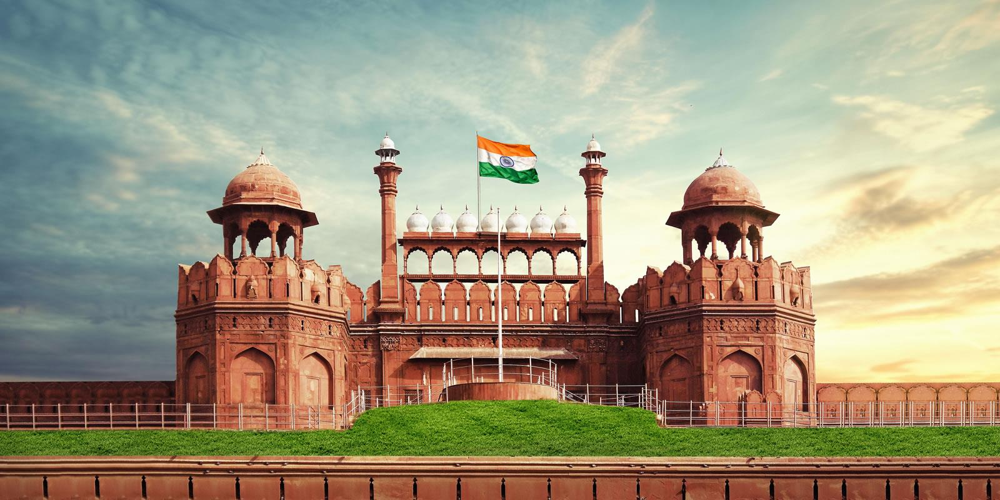
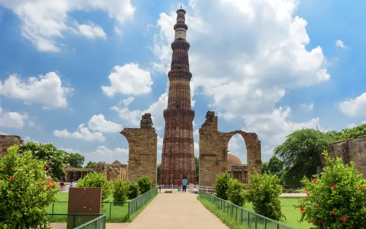
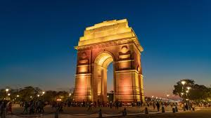
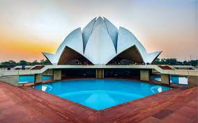
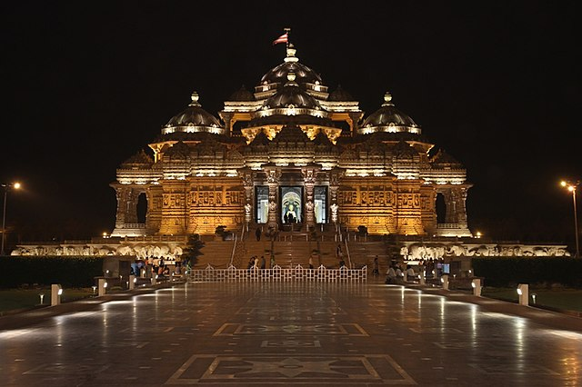
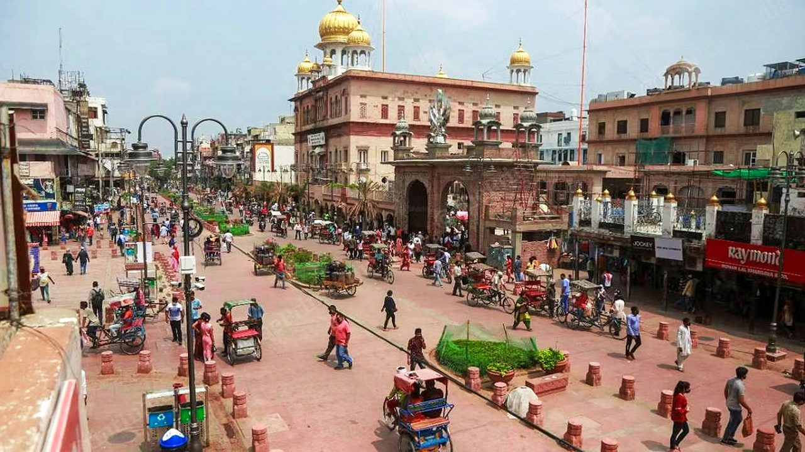
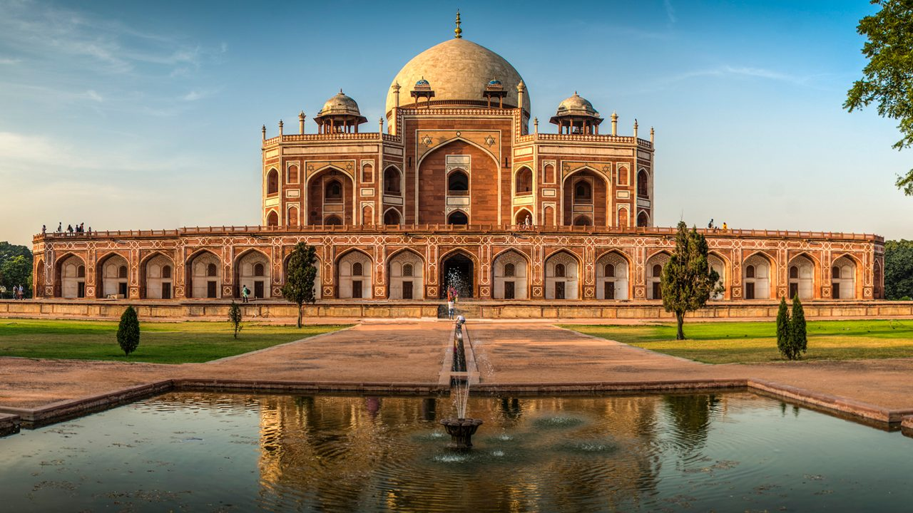
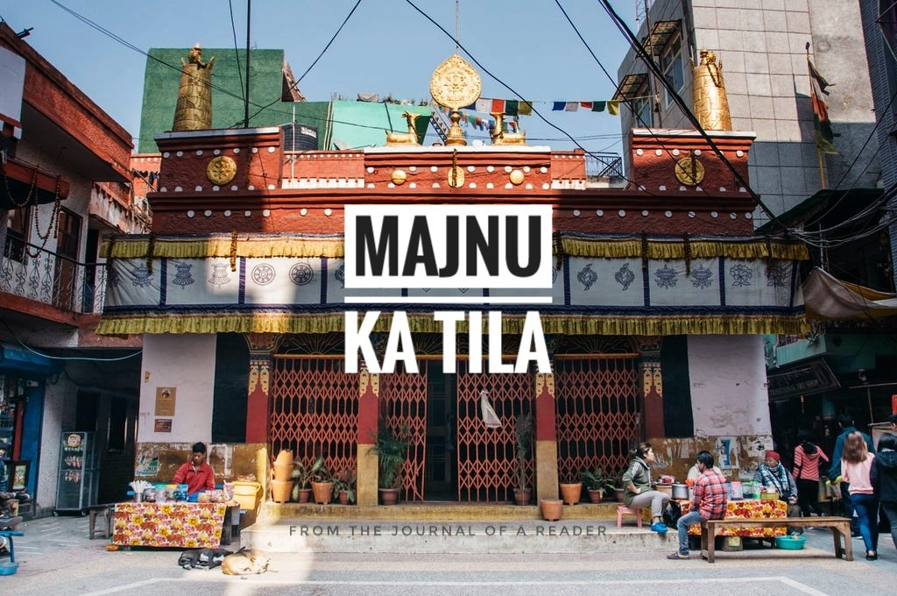
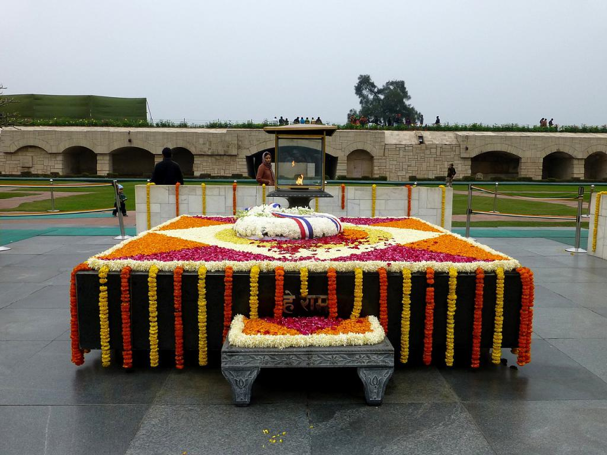

Discover Delhi’s rich blend of ancient history, vibrant culture, and modern lifestyle. Explore majestic monuments, bustling markets, grand architecture, and diverse cuisine as you journey through India’s dynamic capital.

A UNESCO World Heritage site, the Red Fort is an iconic symbol of India’s history and independence. Built by Shah Jahan, its massive red sandstone walls and Mughal architecture attract thousands of visitors daily.

Standing at 73 meters, Qutub Minar is India’s tallest brick minaret. Built in the 12th century, it showcases Indo-Islamic architecture surrounded by ancient ruins in the Qutub complex, a must-visit historical site in Delhi.

A war memorial built to honor Indian soldiers, India Gate stands proudly in the heart of New Delhi. Its surrounding lawns and evening lights make it a peaceful and patriotic landmark to explore.

Shaped like a blooming lotus, the Lotus Temple is a Baháʼí House of Worship. Open to all faiths, it offers a tranquil environment for meditation amidst beautifully landscaped gardens and unique marble architecture.

Akshardham Temple is an architectural marvel showcasing Indian culture, spirituality, and art. The complex includes exhibitions, musical fountains, and a boat ride through India’s heritage. It’s a spiritual and cultural experience not to miss.

One of the oldest and busiest markets in Delhi, Chandni Chowk offers a vibrant mix of street food, spices, textiles, and traditional goods. A haven for shoppers and foodies looking for an authentic Old Delhi experience.

A precursor to the Taj Mahal, Humayun's Tomb is a masterpiece of Mughal architecture with symmetrical gardens and intricate design. It provides a peaceful retreat with historical grandeur in the center of Delhi.

Known as Delhi's Little Tibet, Majnu Ka Tila offers Tibetan culture, food, and Buddhist monasteries. It’s a cultural escape filled with cafes, prayer flags, and a calm vibe amid the city's bustle.

The resting place of Mahatma Gandhi, Raj Ghat is a serene memorial on the banks of the Yamuna. Surrounded by landscaped gardens, it invites reflection on India’s freedom movement and Gandhiji’s legacy.